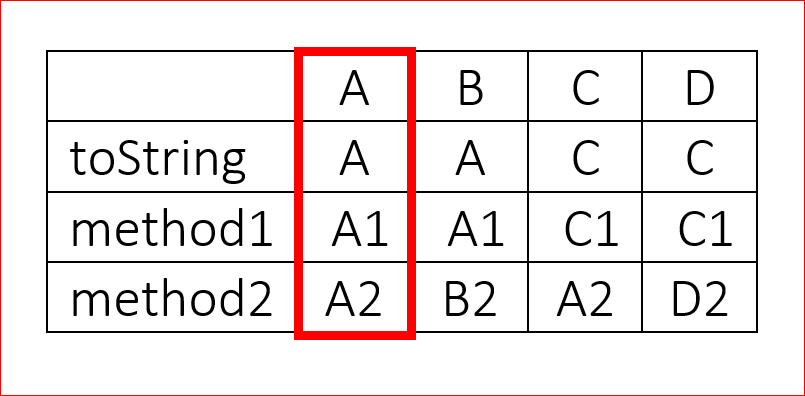
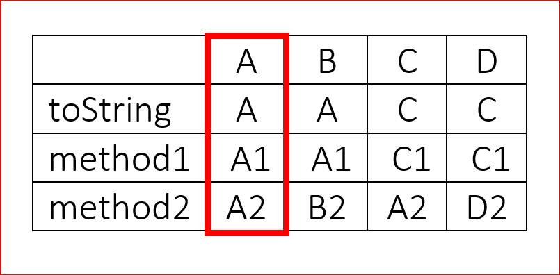

Lesson 6.04 — Polymorphism
====================================================================================================
Overview
--------
### Objectives — _Students will be able to…_
- **Define** polymorphism.
- **Trace** the execution of methods through a class hierarchy and predict output.
### Assessments — _Students will…_
- **Complete** a Tracing Inheritance guide
- **Complete** WS 6.4
### Homework — _Students will…_
- **Read** BJP 9.4 “Is-a Versus Has-a Relationships.”
- **Complete** self-check questions \#18, 20
Materials & Prep
----------------
- **Projector and computer**
- **Whiteboard and** **markers**
- **Classroom copies** of [WS 6.4.1]
- **Tracing Inheritance Guide** [WS 6.4.2]
- **Class hierarchies and client code** from Section 9.3 (on board or projector)
The Round Robin worksheet is 11 pages long, so it may take a while to print out/copy.
Pacing Guide
------------
| Section | Total Time |
|--------------------------------------------|-----------:|
| Bell-work and attendance | 5min |
| Introduction to Polymorphism | 10min |
| Tracing Inheritance Guide | 10min |
| Student practice: WS 6.4.1 | 25min |
| Grade a worksheet and announce class grade | 5min |
Procedure
---------
Hook your class today by displaying a sample of polymorphic code, and asking students to vote as to
whether they think the code is valid. Raise the stakes by offering extra class participation points
to the students that vote correctly. Ask students to explain their reasoning behind the answer, and
allow a little time for debate.
### Bell-work and Attendance \[5 minutes\]
### Introduction to Polymorphism \[10 minutes\]
1. Be forewarned that students may have a hard time with polymorphic syntax. Up until now, we’ve
been drilling matching keywords and types. Passing different types as parameters within the same
method may seem counterintuitive. You should drill and repeat that such behavior is only valid
when substituting subclass objects.
2. **Polymorphism** is the ability for the same code to be used with several different types of
objects. Although the same code is used, it will behave differently depending on the type (class)
of object used.
- Why does this work? It is legal for a superclass variable to refer to an object of its subclass.
Reference variables do not have to exactly match the type of object they refer to!
If public class `Lion` extends `Animal { … }`,
- _then_ `Animal simba = new Animal();`
- _or_ `Animal simba = new Lion();`
- _or_ `Lion simba = new Lion();`
- **_but not_** `Lion simba = new Animal();`
- The object referred to by *simba* refers to a *Lion* object, not an *Animal* object. Methods
called on *simba* will behave like a *Lion* object (e.g. the Lion roars). It may be beneficial
to discuss the following points with your students:
1. `Lion` is a type of `Animal` so it is okay to assign `simba` to an `Animal`.
2. Since `Lion` overrides some of the methods of `Animal`, when we call those overridden
methods, we’ll still see the behavior `Lion` defines.
3. When we assign something to an `Animal`, the only requirement is that it is-a-particular
`Animal`. So we can only access behavior (methods) that the `Animal` class knows about.
3. Ask students to think-pair-share to provide examples of other correct assignment statements. When
you call on students for examples, be sure to have students explain how the new objects will
behave (what methods apply).
4. If TextExcel has already been introduced in any capacity, it’s easy to use the Cells as examples.
The RealCell class is the superclass to the ValueCell, PercentCell and FormulaCell making it easy
to get returned values as a double:
```Java
RealCell myCell = (any subcell);
myCell.getDoubleValue(); // Returns the double value to be displayed.
```
5. Ask students to walk through the MusicalInstrument example with you.
```Java
MusicalInstrument[] instruments = {
new MusicalInstrument(),
new ElectricKeyboard(),
new Guitar(),
new ElectricGuitar()
};
for (int i = 0; i < instruments.length; i++) {
System.out.println(instruments[i]);
instruments[i].pickSound();
instruments[i].playNote();
System.out.println();
}
```
Have your students read the table of outputs (on the slides) and fill in the original method to
find their answer. It will help them with the worksheet.
### Tracing Inheritance Guide \[10 minutes\]
1. Distribute copies of WS 6.4.2 and review the steps that all students should use to determine the
output of a polymorphic program like the example you just showed. They should use this handout
the way they use their problem-solving algorithm, as a procedure to be used on every polymorphic
problem.
2. Demonstrate Step 1: Using the *ABC* example in section 9.3 of the book, diagram the class
hierarchy. Give the first example with Tricky Code Tip that the header without *extends* is the
superclass, then have students help you fill out the rest of this diagram.
 3. Demonstrate Step 2: Starting with class `A` (as emphasized below), determine the output for each
method listed. Have students fill in this table in their notes, volunteering answers for classes
`B`, `C`, and `D`.

4. Demonstrate Step 3: Project the client code `ABCDMain` and ask students to use the table to
predict the outcome from the code. The correct output is given below:
```
A
A1
A2
A
A1
B2
C
C1
A2
C
C1
D2
```
Place the class hierarchy for classes `E`, `F`, `G` and `H` on the projector (also in section
9.3). Give students a few minutes to use the Tracing Inheritance guide to create a table of
output for classes `E`, `F`, `G` and `H`.
Student Practice: WS 6.4.1 \[25 minutes\]
-----------------------------------------
1. Round-robin is a drilling and error-checking exercise used with worksheets. Students write their
name on the worksheet, complete the first problem, then pass the paper to the student on the
right (or whatever direction you choose). The next student first checks the previous answer,
correcting it if need be, then completes the second question. Each student then passes on the
paper again. By the end of the exercise, each student has checked and completed each question on
the worksheet.
2. The hook is that you choose only ONE worksheet from the pile to grade. All students get a grade
from that one worksheet. This keeps students invested throughout the exercise. Advanced students
will check questions throughout the whole worksheet, and all students will try their best to
catch their own (and others’) mistakes, since the whole class shares the
randomly-selected-paper’s grade.
1. Since today’s worksheet only has 13 questions, your chosen worksheet will only represent a
subset of the class.
2. You should still grade one worksheet only, and given everyone the same grade from that one
paper. This will keep stakes high for all students, since they won’t know which paper you will
select to grade.
3. You should time each question/checking interval, and call “SWITCH!” when it is time for
students to pass along papers. Suggested time limits are given below. If you notice that a
time span is too short or too long, adjust all time spans accordingly. Time estimates as given
are based off of AP Test timing.
1. Question 1 should take 5 minutes; project the *A*, *B*, *C*, and *D* classes on the
overhead.
2. Question 2 should take 1 minute.
3. Question 3 should take 5 minutes.
4. Question 4 should take 3 minutes.
5. Question 5 should take 2 minutes.
6. Question 6 should take 5 minutes
7. Question 7 should take 3 minutes.
8. Question 8 should take 5 minutes.
9. Question 9–13 should take 2 minutes
Adjust the timing on these questions as needed, but try to keep a brisk pace. Part of the
engagement factor is the sense of urgency.
### Grade A Worksheet and Announce Class Grade \[5 minutes\]
If time allows, randomly select the worksheet and announce the class grade with a bit of fanfare,
congratulating the class on a job well done. Otherwise, select one paper to grade after class, then
return the paper to the student for study practice.
Accommodation and Differentiation
---------------------------------
To optimize this exercise, you might consider rearranging students (or creating a passing-path) that
mixes students of different coding abilities. The advanced students can use the extra time to
correct mistakes made by others; if they are sitting in proximity to the student that made the
error, they will have a better chance of explaining the correct answer to them.
Due to the brisk pace of the round-robin rotation, there shouldn’t be too much down time for any one
student. If you do find a student that is looking bored, make eye contact with them as you remind
the entire class that everyone should be checking the problems handed to them once they are done
with solving their assigned problem.
In the ELL classroom, you may need to reduce the number or complexity of questions offered on the
worksheet to complete this lesson in one class period.
- Reassign the removed questions as homework, bellwork, or quizzes.
- Read each question aloud for the class.
- Do the first few problems (or a smattering of problems throughout the worksheet) as a whole
group for additional scaffolding.
Alternatively, you can do the entire assignment, but allow 2 class periods to complete each group.
Forum discussion
----------------
[Lesson 6.04 Polymorphism (TEALS Discourse account required)](http://forums.tealsk12.org/c/unit-6/6-04-polymorphism)
[WS 6.4.1]: https://raw.githubusercontent.com/TEALSK12/apcsa-public/master/curriculum/Unit6/WS%206.4.1.docx
[WS 6.4.2]: https://raw.githubusercontent.com/TEALSK12/apcsa-public/master/curriculum/Unit6/WS%206.4.2.docx
3. Demonstrate Step 2: Starting with class `A` (as emphasized below), determine the output for each
method listed. Have students fill in this table in their notes, volunteering answers for classes
`B`, `C`, and `D`.

4. Demonstrate Step 3: Project the client code `ABCDMain` and ask students to use the table to
predict the outcome from the code. The correct output is given below:
```
A
A1
A2
A
A1
B2
C
C1
A2
C
C1
D2
```
Place the class hierarchy for classes `E`, `F`, `G` and `H` on the projector (also in section
9.3). Give students a few minutes to use the Tracing Inheritance guide to create a table of
output for classes `E`, `F`, `G` and `H`.
Student Practice: WS 6.4.1 \[25 minutes\]
-----------------------------------------
1. Round-robin is a drilling and error-checking exercise used with worksheets. Students write their
name on the worksheet, complete the first problem, then pass the paper to the student on the
right (or whatever direction you choose). The next student first checks the previous answer,
correcting it if need be, then completes the second question. Each student then passes on the
paper again. By the end of the exercise, each student has checked and completed each question on
the worksheet.
2. The hook is that you choose only ONE worksheet from the pile to grade. All students get a grade
from that one worksheet. This keeps students invested throughout the exercise. Advanced students
will check questions throughout the whole worksheet, and all students will try their best to
catch their own (and others’) mistakes, since the whole class shares the
randomly-selected-paper’s grade.
1. Since today’s worksheet only has 13 questions, your chosen worksheet will only represent a
subset of the class.
2. You should still grade one worksheet only, and given everyone the same grade from that one
paper. This will keep stakes high for all students, since they won’t know which paper you will
select to grade.
3. You should time each question/checking interval, and call “SWITCH!” when it is time for
students to pass along papers. Suggested time limits are given below. If you notice that a
time span is too short or too long, adjust all time spans accordingly. Time estimates as given
are based off of AP Test timing.
1. Question 1 should take 5 minutes; project the *A*, *B*, *C*, and *D* classes on the
overhead.
2. Question 2 should take 1 minute.
3. Question 3 should take 5 minutes.
4. Question 4 should take 3 minutes.
5. Question 5 should take 2 minutes.
6. Question 6 should take 5 minutes
7. Question 7 should take 3 minutes.
8. Question 8 should take 5 minutes.
9. Question 9–13 should take 2 minutes
Adjust the timing on these questions as needed, but try to keep a brisk pace. Part of the
engagement factor is the sense of urgency.
### Grade A Worksheet and Announce Class Grade \[5 minutes\]
If time allows, randomly select the worksheet and announce the class grade with a bit of fanfare,
congratulating the class on a job well done. Otherwise, select one paper to grade after class, then
return the paper to the student for study practice.
Accommodation and Differentiation
---------------------------------
To optimize this exercise, you might consider rearranging students (or creating a passing-path) that
mixes students of different coding abilities. The advanced students can use the extra time to
correct mistakes made by others; if they are sitting in proximity to the student that made the
error, they will have a better chance of explaining the correct answer to them.
Due to the brisk pace of the round-robin rotation, there shouldn’t be too much down time for any one
student. If you do find a student that is looking bored, make eye contact with them as you remind
the entire class that everyone should be checking the problems handed to them once they are done
with solving their assigned problem.
In the ELL classroom, you may need to reduce the number or complexity of questions offered on the
worksheet to complete this lesson in one class period.
- Reassign the removed questions as homework, bellwork, or quizzes.
- Read each question aloud for the class.
- Do the first few problems (or a smattering of problems throughout the worksheet) as a whole
group for additional scaffolding.
Alternatively, you can do the entire assignment, but allow 2 class periods to complete each group.
Forum discussion
----------------
[Lesson 6.04 Polymorphism (TEALS Discourse account required)](http://forums.tealsk12.org/c/unit-6/6-04-polymorphism)
[WS 6.4.1]: https://raw.githubusercontent.com/TEALSK12/apcsa-public/master/curriculum/Unit6/WS%206.4.1.docx
[WS 6.4.2]: https://raw.githubusercontent.com/TEALSK12/apcsa-public/master/curriculum/Unit6/WS%206.4.2.docx